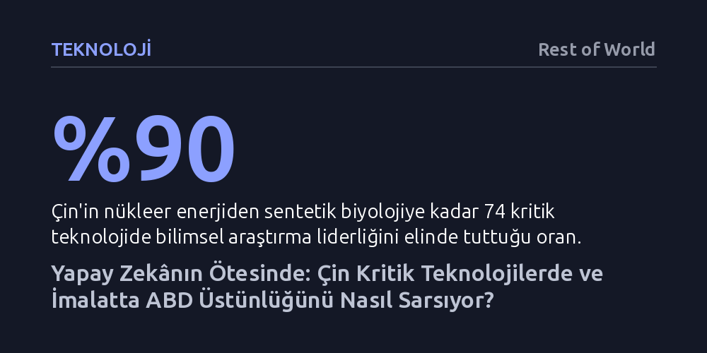

TEKNOLOJI · Rest of World · 2026-10-07
Çin, 74 kritik teknolojinin yüzde 90'ında bilimsel araştırma liderliğini ABD'den devralırken DJI gibi şirketlerle küresel pazar hegemonyası kurdu. Buna karşın teorik bilginin üretime aktarılmasındaki aksaklıklar ve sertleşen jeopolitik yaptırımlar, Pekin'in teknolojik hâkimiyet mücadelesini sınırlıyor.
Çin'in teknoloji yarışındaki üstünlüğünün yapay zekâyla sınırlı olmadığını; araştırma gücünü Batı'nın rekabet edemeyeceği kadar ucuz bir üretim ekosistemiyle birleştirerek küresel dengeleri kalıcı biçimde değiştirdiğini gösteriyor.

Avustralya Stratejik Politika Enstitüsü'nün (ASPI) yayımladığı Kritik Teknoloji Takipçisi verileri, küresel teknoloji liderliğinde sarsıcı bir kırılmayı gözler önüne seriyor. İncelenen 74 güncel ve gelişmekte olan teknolojinin neredeyse yüzde 90'ında Çin, araştırma kapasitesi ve en çok atıf alan akademik üretim bakımından zirveye yerleşmiş durumda. Nükleer enerjiden sentetik biyolojiye, küçük uydulardan kuantum araştırmalarına kadar uzanan bu geniş yelpaze, Pekin'in yalnızca belirli niş alanlarda değil, geleceği şekillendirecek temel bilimlerin hemen hepsinde öncülüğü ele geçirdiğini kanıtlıyor.
Yüzyılın başında durum bunun tam tersiydi. 2000'li yılların başında Amerikan bilim dünyası değerlendirilen teknolojilerin yüzde 90'ından fazlasında tartışmasız bir avantaja sahipti; Çin'in lider olduğu alanlar ise yüzde 5'in bile altındaydı. Ancak aradan geçen yirmi beş yılda Çinli araştırmacılar bu dengeyi kökten değiştirdi. Batı kamuoyunda uzun süredir yerleşik olan 'Çin sadece kopyalar' algısı, yerini temel bilimlerde küresel standartları belirleyen bir araştırma gücü gerçeğine bırakıyor.
Raporun ortaya koyduğu bu çarpıcı tabloya rağmen, akademik göstergelerin her zaman fabrikadaki üretime birebir yansımadığını unutmamak gerekiyor. Araştırmacılar ölçüm yaparken doğrudan sahada kullanılan veya ticari olarak dağıtılan ürünleri değil, yüksek atıf alan bilimsel yayınları esas alıyor. Oysa teorik bir kavramı makalede geliştirmek ile o kavramı seri üretime aktarıp güvenilir bir nihai ürün ortaya koymak bambaşka endüstriyel kabiliyetler gerektiriyor.
Bu çelişkiyi en net gösteren alan uçak ve jet motoru sanayisi. Çinli mühendisler, onlarca yıllık devasa bütçelere ve yoğun araştırmalara rağmen gelişmiş jet motorlarını yerli olarak üretmekte hâlâ ciddi zorluklarla karşılaşıyor. Araştırmacıların da belirttiği gibi, "Origami yapmada çok iyi olabilirsiniz ama kaliteli kâğıt üretemiyorsanız gerçekten origami ustası mısınız?" sorusu, Çin'in bilimsel yükselişinin en kırılgan noktasını özetliyor. Yine de aradaki teorik makasın bu denli hızlı kapanması, Batı için göz ardı edilemeyecek bir uyarı niteliğinde.
Çin'in bilimsel kapasitesini imalat gücüyle birleştirdiği en somut başarı hikayesi tüketici dronları sektöründe görülüyor. Shenzhen merkezli DJI, tek başına dünya tüketici dron pazarının yüzde 70'inden fazlasını kontrol ediyor. 2006 yılında Frank Wang tarafından bir öğrenci yurdu yerine küçük bir ofiste kurulan şirket, hobi amaçlı kontrol sistemleriyle başladığı yolculuğunu 2013'te 700 doların altına piyasaya sürdüğü Phantom 1 modeliyle küresel bir devrime dönüştürdü. Bugün 14 bini aşkın çalışanı bulunan şirket, sektöründe fiilen rakipsiz bir dev konumunda.
DJI'ın başarısı yalnızca şirket vizyonundan değil, Çin'in eşi benzeri olmayan üretim ekosisteminden besleniyor. Cömert devlet desteklerinin yanı sıra Shenzhen havzasında gelişen ileri parça tedarik ağı, başka hiçbir ülkenin boy ölçüşemeyeceği bir maliyet avantajı yarattı. Örneğin Tayvanlı bir dron üreticisi, Çin menşeli motorları değiştirmek için Avustralya'ya kadar alternatif aradığında, Batı yapımı muadil bir motorun 20 kat daha pahalı olduğunu gördü. Bu endüstriyel derinlik, Çinli üreticilerin fiyat ve donanım kalitesinde aşılması imkânsız bir rekabet duvarı örmesini sağladı.
Sivil fotoğrafçılıktan acil müdahale ekiplerine ve hatta Ukrayna savaşındaki siper gözetlemelerine kadar vazgeçilmez bir araca dönüşen bu donanımlar, kaçınılmaz olarak jeopolitik engellere çarptı. ABD Federal İletişim Komisyonu (FCC), ulusal güvenlik risklerini gerekçe göstererek yabancı menşeli yeni dronların ve bileşenlerin pazara girişini kara listeye aldı. Amerika'daki tüketici pazarının yüzde 80'ini elinde tutan DJI doğrudan ismen belirtilmese de yeni modellerin ülkeye girişinin engellenmesi, Çin teknolojisinin küresel entegrasyonuna vurulan en sert darbelerden biri oldu.
Buna karşın Pekin yönetimi geri adım atmıyor. Çin lideri Şi Cinping, ülkenin modernleşme hedeflerini bilim ve teknoloji süper gücü olma vizyonu üzerine inşa etmiş durumda. Çin ekonomisi iç dengelerinde zorluklar yaşasa da Pekin, devasa kaynaklarını ABD ile süren bu teknoloji savaşına yönlendirmeyi sürdürüyor. Kendi kendine yeten ve dünya standartlarını belirleyen bir sanayi omurgası kurma kararlılığı, iki süper güç arasındaki mücadelenin önümüzdeki yıllarda çok daha sertleşeceğini gösteriyor.